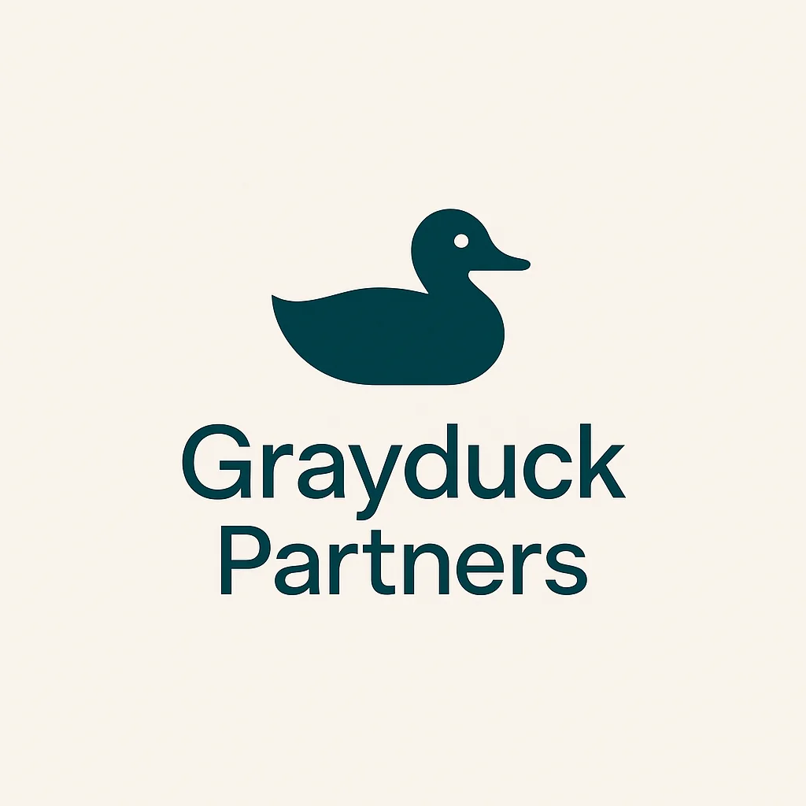

Glen Hanson · info@grayduckpartners.com
Businesses hire me to build production systems, shape strategy, and fill technical leadership gaps. I work with companies where data and AI are core to the product or to running the business. You need senior technical leadership but don't need (or can't justify) a full-time hire. That's where I come in.
I work alongside your engineers. Standups, PRs, architecture decisions. Hands on and strategic.
ML models, data pipelines, APIs, infrastructure. Designed, built, and deployed. Not prototypes.
Roadmaps, feasibility, prioritization. Helping leadership decide where to invest in data and AI.
Sole ML engineer on a product team, building and deploying machine learning systems behind a SaaS platform end to end.
Blending deep domain knowledge with engineering to shape product direction and drive data R&D.
Brought on for data science, stepped into leadership. Designing production systems and leading the team.
Translating a non-technical founder's expertise into a product roadmap and driving it to market.
Career spanning startups (first technical hire) and large consulting firms (high-stakes ML and data systems). Also working with professional service firms on technology strategy, workflows, and automation.
If you're building around data or AI and need senior technical leadership, I'd like to hear what you're working on.